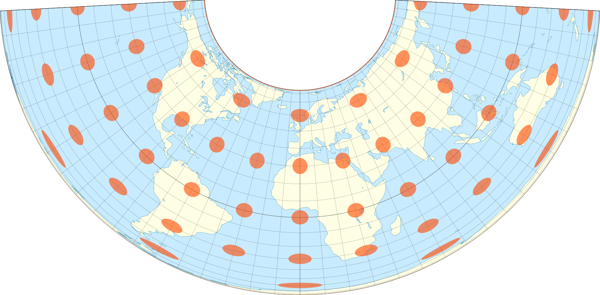

On September 3, 1783, the United States and Great Britain signed the Treaty of Paris. The Treaty ended the American Revolution, with Great Britain recognizing the United States as an independent nation. While the United States has existed for less than 250 years, its political boundaries have increased over 360%. We can use R to animate the growth of US borders over time.
To present the borders of the US over time, we can use shapefiles to store geospatial information that can be plotted and modified. Luckily for us, the Newberry Library stores an atlas of the historical county boundaries of the US. You can either download the files on their website or use their package USAboundaries for direct access.
install.packages("USAboundaries")
## Installing package into '/home/badbayesian/R/x86_64-pc-linux-gnu-library/4.0'
## (as 'lib' is unspecified)
# Or
# devtools::install_github("ropensci/USAboundaries")
# devtools::install_github("ropensci/USAboundariesData")
This post will focus on just the continental US. With a simple lapply call (or map in other languages), we can download the US’ state boundaries for every year in the data set.
The final object, maps, is a spatial dataframe allowing for all operations of both dataframes and spatial objects. In our case, each row corresponds to information of a state at some point in time. The geometry column stores the polygon which defines the boundaries.
head(maps)
## Simple feature collection with 6 features and 20 fields
## geometry type: MULTIPOLYGON
## dimension: XY
## bbox: xmin: -91.65403 ymin: 30.35712 xmax: -66.94993 ymax: 47.4597
## geographic CRS: WGS 84
## id_num name id version start_date end_date
## 1 22 Connecticut ct_state 1 1783-09-03 1786-09-13
## 2 28 Delaware de_state 1 1783-09-03 2000-12-31
## 3 42 Georgia ga_state 1 1783-09-03 1798-04-06
## 4 76 Massachusetts ma_state 1 1783-09-03 1804-12-30
## 5 81 Maryland md_state 1 1783-09-03 1791-03-29
## 6 116 North Carolina nc_state 1 1783-09-03 1790-04-01
## change
## 1 Connecticut became an independent state on 4 July 1776. The map depicts state boundaries as of 3 September 1783.
## 2 The three Lower Counties, of KENT, NEW CASTLE, and SUSSEX became an independent state on 4 July 1776. The name Delaware was formally adopted on 20 September 1776. The map depicts state boundaries as of 3 September 1783.
## 3 Georgia became an independent state on 4 July 1776. The map depicts state boundaries as of 3 September 1783.
## 4 Massachusetts, including the area of Maine, became an independent state on 4 July 1776. The map depicts state boundaries as of 3 September 1783.
## 5 Maryland became an independent state on 4 July 1776. The map depicts state boundaries as of 3 September 1783.
## 6 North Carolina became an independent state on 4 July 1776. The map depicts state boundaries as of 3 September 1783.
## citation start_n end_n area_sqmi
## 1 (Declaration of Independence) 17830903 17860913 4982
## 2 (Declaration of Independence; Swindler, 2:197) 17830903 20001231 2013
## 3 (Declaration of Independence) 17830903 17980406 152080
## 4 (Declaration of Independence) 17830903 18041230 40682
## 5 (Declaration of Independence) 17830903 17910329 10065
## 6 (Declaration of Independence) 17830903 17900401 91507
## terr_type full_name abbr_name name_start state_abbr
## 1 State Connecticut CT Connecticut (1783-09-03) CT
## 2 State Delaware DE Delaware (1783-09-03) DE
## 3 State Georgia GA Georgia (1783-09-03) GA
## 4 State Massachusetts MA Massachusetts (1783-09-03) MA
## 5 State Maryland MD Maryland (1783-09-03) MD
## 6 State North Carolina NC North Carolina (1783-09-03) NC
## state_name state_code year states geometry
## 1 Connecticut 09 1783-09-03 TRUE MULTIPOLYGON (((-73.5055 41...
## 2 Delaware 10 1783-09-03 TRUE MULTIPOLYGON (((-75.07024 3...
## 3 Georgia 13 1783-09-03 TRUE MULTIPOLYGON (((-81.50318 3...
## 4 Massachusetts 25 1783-09-03 TRUE MULTIPOLYGON (((-70.81094 4...
## 5 Maryland 24 1783-09-03 TRUE MULTIPOLYGON (((-76.01758 3...
## 6 North Carolina 37 1783-09-03 TRUE MULTIPOLYGON (((-78.52302 3...
Before plotting our maps, there is one last important concept – projection. A projection is a method of mapping a 3D object (the Earth) onto a 2D sheet (a map). Regardless of the projection used, the image is unfortunately distorted in some manner. Usually, projections trade-off distortions between scale (or size) with shape. Projections may also create uneven distortions where some areas on the map have little distortion while others are heavily distorted. Many American maps use the Albers projection, as the distortions are minimal for the US area.

Albers projection. All the circles are identical in 3D space, however, they distort when mapped to 2D space. Note that the circles in North America are minimally distorted.
Plotting maps with spatial dataframes is easy with ggplot!
With geom_sf(), plotting maps in ggplot is identical to using regular ggplot.
Since we stored our data in a geospatial dataframe, we can filter on year to animate the plots. The filtering happens with transition_manual(year), which creates a new frame for the animation for each different year. With {frame} you can reference the frame if you want to change text to reflect the year of the map. For example the function, historical_events(frame) adds a subtitle with some historical events for that year. gganimate lazily builds the animation i.e. does not create the animation until animated_map or animate() is called. Depending on the complexity of the shapefile and the strength of your computer, generating the animation may take a couple of minutes.
library(gganimate)
library(ggspatial)
historical_events <- function(frame) {
year <- 1783 + (frame - 1)
event <- case_when(
year <= 1803 ~ "Organization of territory after Revolutionary War",
year <= 1819 ~ "Purchase of Louisiana and Spanish Cession",
year <= 1845 ~ "Northwest expansion (inc. Trail of Tears)",
year <= 1861 ~ "Mexican-American War and Southwest expansion",
year <= 1865 ~ "Civil War",
year <= 1897 ~ "Reconstruction and western statehood",
year <= 1945 ~ "Pacific and Caribbean expansion (not included)",
year <= 2000 ~ "Present day"
)
return(event)
}
## Full size US
usa <- filter(maps, year == "2000-9-3")
usa$geometry <- st_union(usa)
usa <- slice(usa, 1)
usa[,-length(colnames(usa))] = NA
usa[nrow(usa)+length(dates)-1,] <- NA
usa$year <- dates
usa$geometry <- usa$geometry[1]
usa$states <- FALSE
maps <- bind_rows(maps, usa)
animated_map <- ggplot(maps) +
geom_sf(aes(color = states, fill = terr_type)) +
coord_sf(crs = albers_projection) +
theme_bw() +
transition_manual(year) +
labs(
title = "United States ({1783 + (frame - 1)})",
subtitle = "{historical_events(frame)}",
caption = paste(
"Continental US (48 states); Data from",
"Newberry Library’s Atlas of Historical County Boundaries,"
)
) +
annotation_north_arrow(
location = "bl", which_north = "true",
pad_x = unit(0.75, "in"), pad_y = unit(0.5, "in"),
style = north_arrow_fancy_orienteering
) +
annotation_scale(location = "bl", width_hint = 0.5) +
scale_color_manual(values = c("grey", "black")) +
guides(fill = guide_legend(title = "Territory Type"),
color = FALSE)
gif <- animate(animated_map, renderer = gifski_renderer(),
nframes = length(dates), duration = 75)
anim_save("us_expansion.gif", gif)